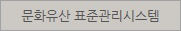

<div id="footer">
<!-- foot_inner -->
<div id="foot_inner">
<h3 class="blind">하단메뉴</h3>
<ul class="foot_menu">
<li><a href="#">박물관 소개</a>|</li>
<li><a href="#">어린이박물관</a>|</li>
<li class="private"><a href="#">개인정보처리방침</a>|</li>
<li><a href="#">전자민원</a>|</li>
<li><a href="#">공공데이터개방</a>|</li>
<li><a href="#">저작권 정책</a>|</li>
<li><a href="#">클린신고센터</a></li>
</ul>
<p class="foot_img"><a href="#"></a></p>	
<!-- form -->
<form action="" method="post">
<fieldset>
<legend class="blind">가이드북,관련사이트</legend>
<select>
<option value="가이드북 다운로드">가이드북 다운로드</option>
<option value="한국어">한국어(PDF)</option>
<option value="영어">English(PDF)</option>
<option value="중국어">Chinese(PDF)</option>
<option value="일본어">Japanese(PDF)</option>
<option value="저시아어">pyccknn(PDF)</option>
<option value="프랑스어">francais(PDF)</option>
<option value="Deutsch">Deutsch(PDF)</option>
<option value="Viet">Viet(PDF)</option>
<option value="espanol">espanol(PDF)</option>
</select>
<select>
<option value="관련사이트 바로가기">관련사이트 바로가기</option>
<option value="국립부여박물관">국립부여박물관</option>
<option value="국립공주박물관">국립공주박물관</option>
<option value="국립진주박물관">국립진주박물관</option>
<option value="국립청주박물관">국립청주박물관</option>
<option value="국립대구박물관">국립대구박물관</option>
<option value="국립김해박물관">국립김해박물관</option>
<option value="국립제주박물관">국립제주박물관</option>
<option value="국립춘천박물관">국립춘천박물관</option>
<option value="국립나주박물관">국립나주박물관</option>
<option value="국립미륵사지박물관">국립미륵사지박물관</option>
<option value="국립박물관 문화재단">국립박물관 문화재단</option>
<option value="국립중앙박물관회">국립중앙박물관회</option>
<option value="사단법인 한국박물관협회">사단법인 한국박물관협회</option>
<option value="국립중앙박물관 인트라넷">국립중앙박물관 인트라넷</option>
</select>
</fieldset>
</form>
<p class="foot_logo"></p>
<address>04383서울시 용산구 서빙고로 137(용산동6가 168-6) 대표전화 02.2077.9000
<span>&copy; NATIONAL MUSEUM OF KOREA</span></address>
<ul class="award">
<li><a href="#"></a></li>
<li><a href="#"></a></li>
<li><a href="#"></a></li>
</ul>
</div>
</div>